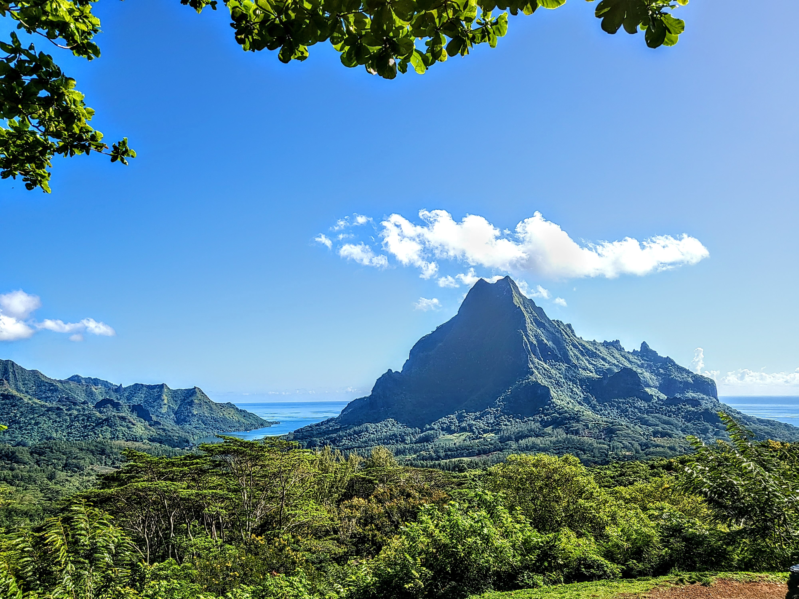
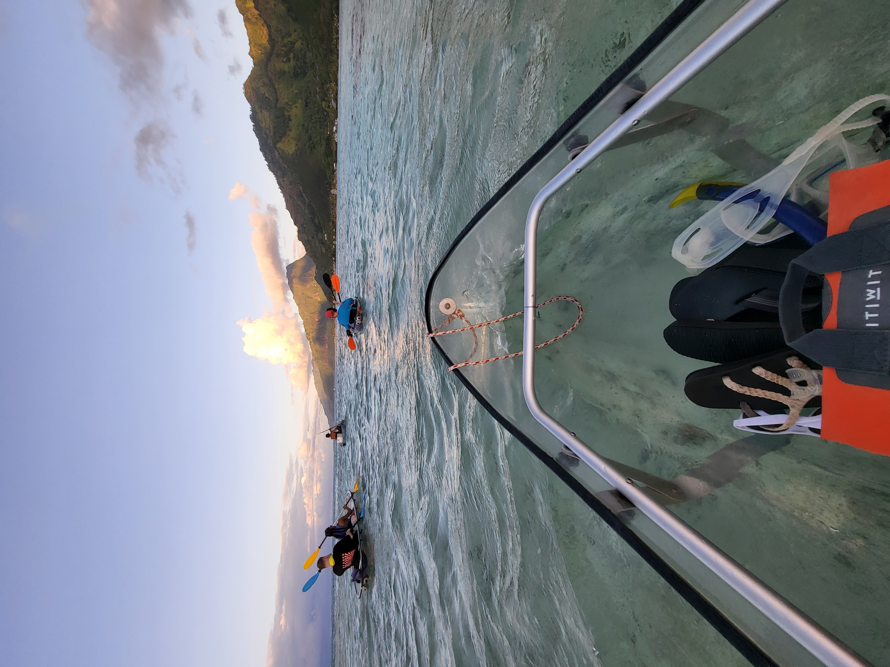

Island Quest: Nature's Wonders

Photo by Celina Reeb, taken in 2022. Mo'Orea.

Photo by Celina Reeb, taken in 2022. Mo'Orea.

Photo by Celina Reeb, taken in 2022. Mo'Orea.
Unlock the Secrets of Our Enchanting Island.
From majestic mountain peaks that touch the sky to lush, rolling valleys bursting with life, our island is a paradise waiting to be discovered.
There's something here to ignite the passion in every soul.
Popular activities on the island range from scenic boat or bus tours and
hikes through the rainforest to witness Taniti’s active volcano, to thrilling chartered fishing excursions and snorkeling adventures
in crystal-clear waters. For those seeking an adrenaline rush, zip-lining through the lush canopy or soaring above the landscape on a
helicopter ride offers breathtaking perspectives of this tropical paradise. No matter your passion,
unforgettable experiences await you here.